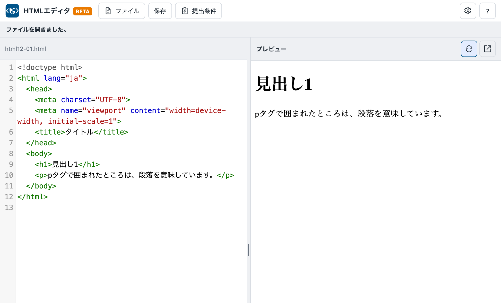

実習ファイルと提出
html12-01.html
取得・提出の案内が表示されないときは、先生に確認してください。
- 上のファイル名を確認し、「本人用HTMLを取得」を押します。別画面で自分の学校アカウントを確認し、本人用HTMLを発行してダウンロードします。
- 取得したファイルを、名前を変えずに 書類 → HTML実習 フォルダへ保存します。前の実習のHTMLも同じフォルダに置きます。
- エディタの「フォルダを接続…」でHTML実習フォルダを選び、表示された一覧から今回のHTMLを開きます。
- コードを編集し、プレビュー右上の更新アイコン（⌘Enter）で表示を確認します。上部の「保存」も押し、「Macのファイルに保存しました」の表示を確認します。
- エディタの「提出」→「提出画面を開く」から提出フォームへ進み、保存したHTMLを選んで「提出する」を押します。「提出を受け付けました」の表示まで確認してください。
初めての操作は取得・フォルダ接続・保存の詳しい手順を確認してください。フォルダ未接続時などは保存がダウンロードになるので、保存先・内容・ファイル名をFinderで確認します。
プレビュー更新とファイル保存は別の操作です。配付情報（joho-issued-htmlを含むコメント）は削除・変更しないでください。CotEditorなどで編集した場合は、上の「提出する」から提出フォームを開けます。
確認できた採点項目には ★ が付きます。受付期間内は何回でも修正して再提出できますが、同じ課題の新しい提出は 60秒以上 あけてください。
★はコードの確認結果です。画像が表示されること、リンクが開くこと、見やすさは、自分のブラウザでも確かめてください。
保存・復元で困ったとき
保存に失敗したときは、編集画面を閉じずに先生に相談してください。作業後は HTML実習 フォルダ全体を別の場所にもコピーしておくと、画像もまとめて戻せます。
次回はMacに保存したファイルを開いて続けます。ブラウザの控えは自動では開きません。万が一のときだけ「設定」→「困ったときの復旧」→「ブラウザの控えから復旧…」で選び、復旧した内容をMacへ保存してください。
提出済みのHTMLは、提出画面の「控えを保存」から控えを保存できます。これは提出時点のHTMLだけで、画像や提出後の編集内容は含みません。テンプレートを取り直しても作業途中の内容は復元されないので、編集中のファイルに上書きしないでください。
(1) HTMLファイルの基本
HTMLファイルの編集
本人用HTMLをエディタで開く
エディタ上部の「課題ファイルのダウンロード」から html12-01.html を選び、学校アカウントで本人用HTMLを取得します。操作に迷ったときは、上部の「実習の手順」を確認します。解説だけを表示している場合は、上の「実習ファイルと提出」から取得できます。
取得したファイルを書類 → HTML実習へ保存したら、エディタの「フォルダを接続…」でHTML実習フォルダを選び、表示された一覧からhtml12-01.htmlを開きます。中央上部のファイル名を確認してください。
操作に迷ったら、実習フォルダを接続する手順を確認してください。フォルダ選択画面では、HTMLファイルがグレー表示でも正常です。
ソースコードの入力
エディタ中央のコード欄でhtml12-01.htmlを編集します。配付情報のコメントを残して、次のソースコードを書きます。
改行と閉じタグは自分で入力します。行頭の字下げ（インデント）は、半角スペース2つ分です。Tabキーでも入力できます。
<!doctype html>
<html lang="ja">
<head>
<meta charset="UTF-8">
<meta name="viewport" content="width=device-width, initial-scale=1">
<title>タイトル</title>
</head>
<body>
<h1>見出し1</h1>
<p>pタグで囲まれたところは、段落を意味しています。</p>
</body>
</html>
HTMLファイルの保存
エディタ上部の「保存」を押します。コード欄で⌘Sを押しても保存できます。接続したフォルダ内のファイルを保存したときは、エディタに「Macのファイルに保存しました」と表示されたことを確認してください。
フォルダ未接続など、直接保存できない場合はダウンロードになります。Finderで保存先と内容を確認し、指定のファイル名に「(1)」などが付いていないかも確認します。
HTMLファイルの表示
プレビューで確認する
右のプレビュー上部にある更新アイコン「プレビューを更新」を押します。コード欄で⌘Enterを押しても更新できます。狭い画面では「プレビュー」へ切り替えて確認します。

説明用HTMLを表示した画面例（本人用の配付情報は含みません）。更新アイコンは表示の確認、「保存」はMacのファイルへの保存です。
保存したHTMLを通常のブラウザでも確認する
Finderでhtml12-01.htmlを右クリックし、「このアプリケーションで開く」からChromeやSafariを選ぶと、保存済みファイルを表示できます。<title>で指定したブラウザのタブの題名も、この画面で確認します。
エディタのプレビューは表示確認用で、通常のブラウザとは一部動作が異なります。エディタで保存し直した後、この保存済みHTMLの表示画面を再読み込みすると変更を確認できます。
編集した内容を確認して保存する
プレビュー更新とファイル保存は別の操作です。エディタで⌘Rを押すとアプリ全体の再読み込みになるので、表示の確認にはプレビューの更新アイコンを使います。
コード欄で編集する
エディタ中央のhtml12-01.htmlで、</body>の直前に次のコードを入力します。
<p>新しい段落を追加します。</p>
変更箇所の反映
プレビューを更新し、「新しい段落を追加します。」が表示されることを確認します。その後「保存」を押し、Macのファイルにも変更を残します。
エディタを閉じた後や次回の授業では、Macに保存したファイルを開いて続けます。ブラウザの控えは自動では開きません。復旧が必要な場合は、次回の再開と復旧を確認してください。
(2) HTMLファイルの構成
HTMLファイルの構成
さきほど作成したHTMLファイルの各要素を説明します。
<!doctype html>
<html lang="ja">
<head>
<meta charset="UTF-8">
<meta name="viewport" content="width=device-width, initial-scale=1">
<title>タイトル</title>
</head>
<body>
<h1>見出し1</h1>
<p>pタグで囲まれたところは、段落を意味しています。</p>
<p>新しい段落を追加します。</p>
</body>
</html>
<!doctype html>
ドキュメントタイプ宣言といい、このファイルがHTML5のファイルであることを明示します。
HTMLにはいくつかバージョンがあり、この書き方は現在主流になっているHTML5というバージョンの書き方になります。
厳密には、ドキュメントタイプ宣言はタグではありません。
<html lang="ja">〜</html>
この文書がHTML文書であることを指定します。
<html>〜</html>のあいだに、後述のheadタグとbodyタグを１つずつ指定します。
lang="ja"は、このページの主な言語が日本語であることをブラウザや読み上げソフトに伝えます。
<head>〜</head>
このあいだにページのタイトルや説明文、使用する外部ファイルのリンクなど、ページの情報を記述します。
この部分はブラウザには表示されません。
<body>〜</body>
実際にブラウザ上で表示されるコンテンツを入力します。
headタグ
<meta charset="UTF-8">
文字コードをUTF-8に指定します。
<meta name="viewport" content="width=device-width, initial-scale=1">
スマートフォンなどでも、画面の幅に合わせて適切な大きさで表示するための設定です。
<title>〜</title>
ページのタイトルを記述します。ブラウザのタブやブックマーク，検索したときの見出しなどとして表示されます。
bodyタグ
bodyタグの中に入れるタグは、次のページから詳しく扱います。
<h1>〜</h1>
見出しを表示します。
<p>〜</p>
段落を表示します。
(3) HTMLファイルの書き方
タグの書き方
開始タグと終了タグに囲まれた範囲のことを要素といいます。
開始タグは<タグ名>のように、<と>でタグ名を囲みます。また、終了タグはタグ名の前に/（スラッシュ）を加えて</タグ名>のように書きます。
※タグ名や<と>は、半角英数字で書きます。基本的に大文字と小文字の区別はありませんが、現在は小文字で記述することが推奨されています。
<タグ名>コンテンツ</タグ名>
タグのネスト
開始タグと終了タグの間に、別のタグが入ることを、タグのネスト（入れ子）といいます。ネストする場合は、必ず内側のタグの終了タグを書いてから、外側の終了タグを入れます。
<p><strong>strongタグ</strong>は強調する場合に使います。</p>
タグのネストとインデント
複数行からなる要素をネストする場合、内側の要素を次のようにインデント（字下げ）すると見やすくなります。インデントする場合は、半角スペース２つ分字下げします。HTMLエディタではTab ⇥キーで半角スペース２つを入力できます。改行後の字下げは自動では付かないので、自分で入力してください。
<ul>
<li>箇条書き１</li>
<li>箇条書き２</li>
<li>箇条書き３</li>
</ul>
タグの属性
タグによっては、開始タグの中にさまざまな設定を書くことがあります。このような設定を属性といい、属性に指定する内容を属性値または単に値といい、"（ダブルクォート）で囲んで記述します。
<タグ名 属性="属性値">コンテンツ</タグ名>
次の例では、リンクを記述するaタグで、そのリンク先をhref属性でリンク先のURLを記述します。
<a href="https://www.kaijo.ed.jp/">海城中学高等学校</a>
ひとつのタグに複数の属性を指定することもあります。次の例では、横幅と縦の長さや代替文字列を指定して画像を表示します。
<img src="./images/photo01.jpg" width="480" height="320" alt="写真01">
コメントアウト
コメントを記すことをコメントアウトといいます。コメントはブラウザ上で表示されない部分で、制作上のメモ書きやHTMLの構造の区切りを入れる目的で使用します。ただし、ソースコードには表示されるので、読まれてはいけないことは記載しないようにしましょう。
HTMLのコード内にコメントアウトするときは <!-- と --> で囲みます。
<!-- ここにコメントを書きます -->
コメントは複数行にわたって記述することもできます。
<!-- 複数行のコメントを
残すこともできます -->